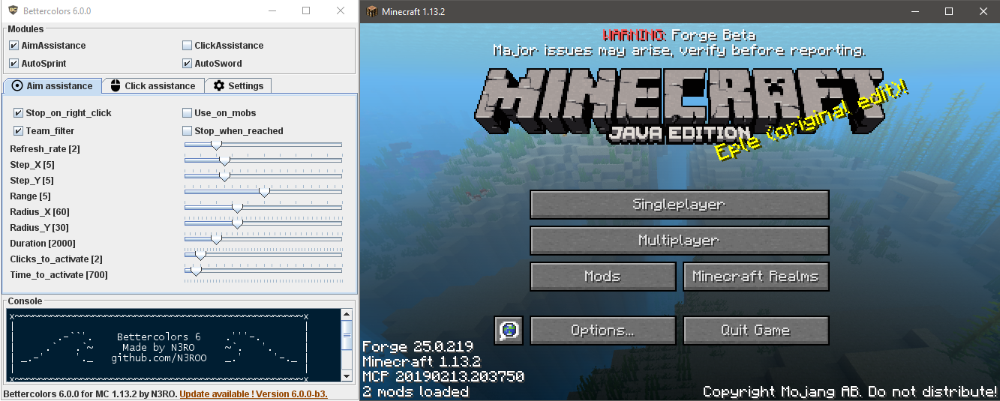

Bettercolors
by nero!
Last update : 03/07/2019

Readme
Context
I made this project by my own to learn how to bypass basic anti-cheats. This experience could help me building a powerful anti-cheat later. I started it on the 03/09/2017 and finished the first version on the 04/09/17.
Why bettercolors ? At the beginning I wanted to make a mod that improves the game colors for resource packs, but I preferred to make something more exciting, which is this mod. I needed to bypass forge limitations and server-sided anti cheats to make this mod safe. So I decided to make an aim & click assistance, and the name did not change. Then I continued to improve it from time to time.
Disclamer
I made this project to learn Java in a funny way. I started 2 years ago but the other repositories are, and will stay private.
Only this repository will stay public because it can be used by newbies to improve their aim and their click rate without giving them a huge advantage.
This has been made for educational purposes.
Please make sure that the server you are playing on allows the use of this mod ! Use it at your own risk. I won't be responsible for anything you do wrong with this mod.
Features description
- Aim assistance : A smooth and humanlike aim assistance 100% undetectable by any anticheat. It is invisible since it looks absolutely human. You can record videos while using it without any problem.
- Click assistance : A humanlike click assistance that sends REAL clicks, to help you click faster. It can bypass forge CPS counter mods by toggling packets.
- External interface : A clean external interface to configure the mod outside the minecraft client, so you can record without any problem !
- Console : Curious ? There is a console showing everything happening in the mod.
- Teammate detection : The mod find your teammates from any server game mode, and prevent modules to be activated on them.
- Settings : You can configure every mod and all is saved in real-time.
- Settings preset : You can save, load, and create settings presets from a cool interface.
How to use it
Step 1:
Download the .jar mod file from the download button
Step 2:
Download the last minecraft forge version for your version of minecraft.
Step 3:
Install minecraft forge. If you are having troubles, follow a tutorial on youtube
Step 4:
Put bettercolors.jar (the .jar mod you downloaded) in your minecraft repertory, under the "mods" directory. Follow a tutorial on youtube if you can't find this directory.
Step 5:
To use it, click on the INSERT key of your keyboard. It will open the menu.
Commands
- [HOME] : Toggle aim assist
- [PAGE_UP] : Toggle click assist
- [INSERT] : Toggle GUI
Features help
- Aim assistance
- Stop on right click" : it stops the aim assistance if you right click,
- The aim speed is defined by refresh rate,
- The aim force is defined by step X and step Y,
- The aim range sets the maximum distance to aim an entity,
- The aim radius is the FOV in which you will aim at an entity,
- "Stop when reached" : it means that when you aim at an entity, the aimassist stops
- Click assistance
- "Packets" : Send packets instead of REAL clicks (bypass forge anticheat but more risky server-side),
- Only on entity" : It will click only if you are aiming entity,
- Additional clicks defines how many clicks will be sent in addition to yours,
- Chance is the chance of every artificial click to be sent,
- Duration corresponds to the activation time of the click assistance,
- Common :
- "Use on mobs" : Defines if the modules works on mobs,
- "Team filter" : Defines if the modules works on teammates,
- Clicks / Time to activate defines the number of clicks per time that you need to do in order to activate the modules.
Licence & important note
You can make a video or share the mod, but no matter what you will do, you must put my website to download the mod, no other download links are tolerated. This one is 100% secure, and please remember that this mod has been made for educational purposes. I'm not responsible of what you will do with this mod. Moreover, before going on any server, please check that the use of this mod is allowed.
Last version changelog : V.6.0.0 for Minecraft 1.14.3
Waiting for the release (work in progress)...
Last version changelog : V.6.0.0 for Minecraft 1.13.2
- Added error messages in the console if some resources were not loaded
- Improved font rendering (antialiasing)
- Improved error messages (they can be sent even if the window is not ready)
- Fixed crash in mod menu (#21)
- Fixed team filter (#20)
- Fixed & improved version checker
- Fixed resource loading (forge fixed the resource loader, so I had to remove the trick to get it working)
Last version changelog : V.6.0.0 for Minecraft 1.8.9
Waiting for the release (work in progress)...
Details
- Last version: -
- Release date: -
- Download: -
- Last version: 6.0.0
- Release date: 02/07/2019
- Download: click here (direct link)
- Last version: 6.0.0-b3
- Release date: 12/11/2018
- Download: click here (direct link)
See the source code
Features
- Smooth aim assistance
- Advanced click assistance
- Autoclick
- Autosprint
- Teammate detection
- Userfriendly external GUI
- Settings management GUI